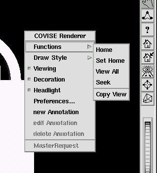

If you click with the right mouse button
on the viewer area a window with the heading Covise Renderer pops
up that provides additional functions (options) that can be selected
with the left mouse button (see below).

These functions/options can be grouped
into six classes: